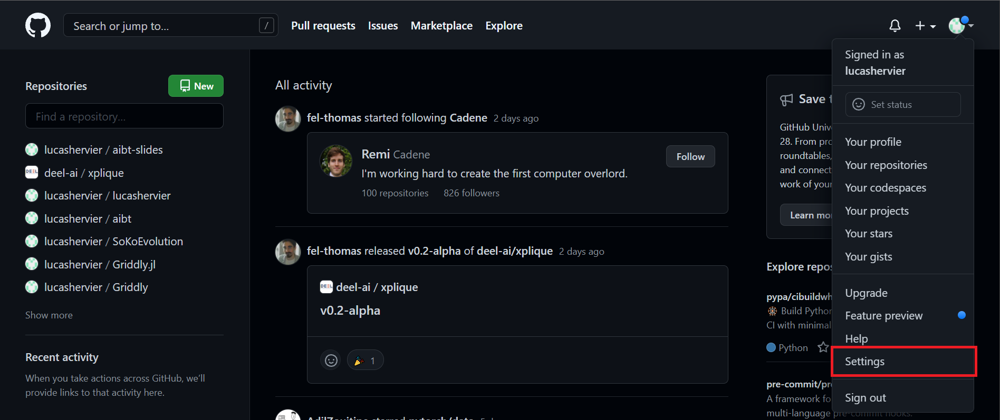
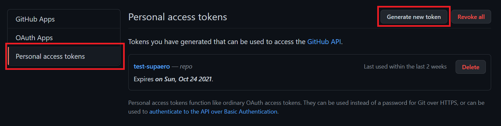
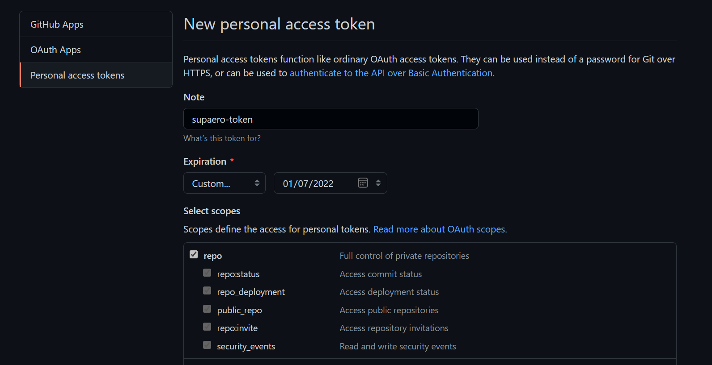
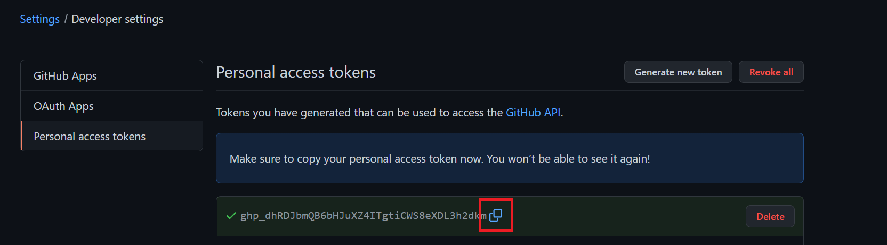
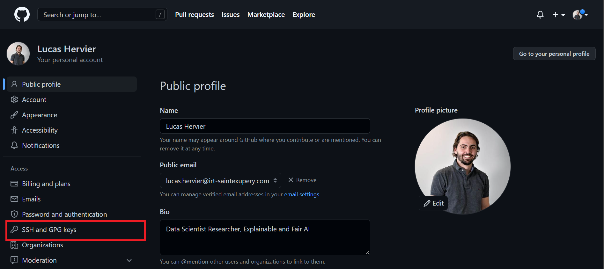
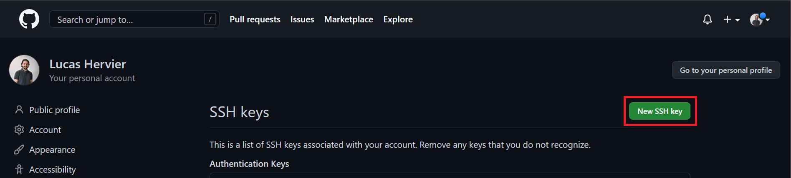
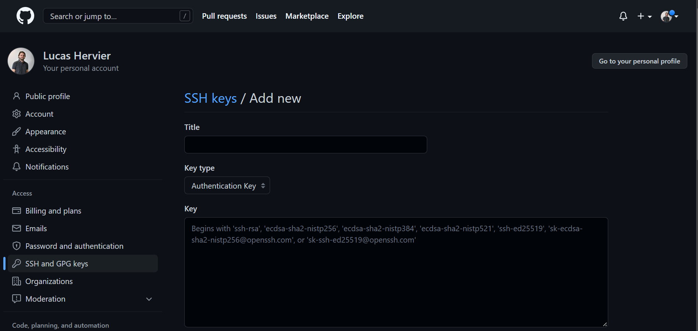
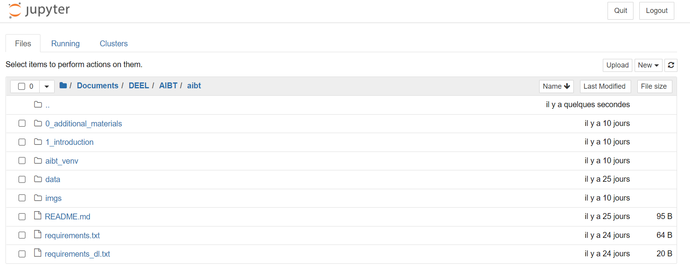
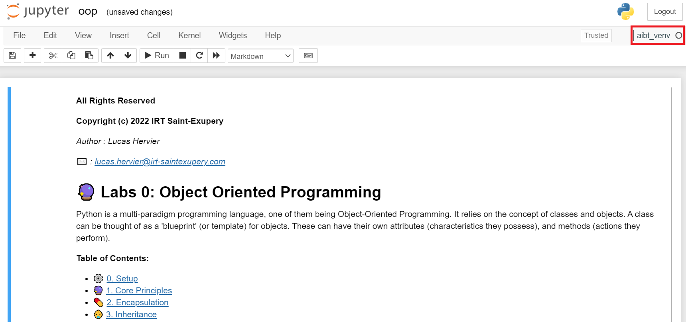

AIBT - Hands on
TOOLS
## Tools of this course As you can guess a lot of handy tools have arised since ML has become so popular. We will introduce here some of them in this first class. --- ## Python Python is a popular programming language and it is the one we will work with for several reasons: - It is beginner friendly and easy to use. - The community is huge. - Numerous tutorials, helps available on internet. - The ecosystem of libraries, frameworks, and tools is enormous and growing. -- ## Python As mentionned earlier the number of handy libraries is quite significant. Here are some of interests for this course: - [numpy](https://numpy.org/): fundamental package for scientific computing - [pandas](https://pandas.pydata.org/): data analysis and manipulation tool - [scikit-learn](https://scikit-learn.org/stable/): simple and efficient tools for predictive data analysis - [matplotlib](https://matplotlib.org/), [plotly](https://plotly.com/): vizualisations tools - [PyTorch](https://pytorch.org/): powerful deep learning framework -- ## Python If you have no prior knowledge on Python or need a little bit of refreshment here is a short introduction tutorial: <div style="text-align:center"><iframe width="540" height="200" src="https://www.youtube.com/embed/kqtD5dpn9C8" frameborder="0" allow="accelerometer; autoplay; encrypted-media; gyroscope; picture-in-picture" allowfullscreen></iframe></div> Or if you rather want to read you can go to the [official python beginner tutorial](https://wiki.python.org/moin/BeginnersGuide/Programmers) --- ## Git and GitHub <div style="text-align:center"><img width="200" height="52" alt="GitHub Logotype" class="height-auto" src="https://github.githubassets.com/images/modules/logos_page/GitHub-Logo.png"></div> > "GitHub is a provider of Internet hosting for software development and version control > using Git. It offers the distributed version control and source code management (SCM) > functionality of Git, plus its own features." > > <div style="text-align:right"><cite><a href="https://en.wikipedia.org/wiki/GitHub">- Wikipedia</a></cite></div> -- ## Git and GitHub <div style="text-align:center"><img width="200" height="52" alt="GitHub Logotype" class="height-auto" src="https://github.githubassets.com/images/modules/logos_page/GitHub-Logo.png"></div> Note that: - **Git** is a [Version Control System](https://git-scm.com/video/what-is-version-control) - **GitHub** is a Git server -- ## Git and GitHub Do not worry we won't require an exhaustive knowledge of `git` and **GitHub** just some basis. <div text-align="center"><img src="imgs/git_branch.png" width="80%" height="auto"></div> -- ## Git and GitHub ### Exercise <div class="center" text-align="center"> It is time to get all the courses materials hosted on GitHub! First, go to <a href="https://github.com/">GitHub</a> and sign in. </div> -- ### Exercise (For ISAE's computer) - Go to your Settings <div text-align="center"></div> -- ### Exercise (For ISAE's computer) - Go to Developper Settings <div text-align="center"><img src="imgs/git_settings2.png" width="700" height="auto"></div> -- ### Exercise (For ISAE's computer) - Go to Personal access tokens - Select Generate new token <div text-align="center"></div> -- ### Exercise (For ISAE's computer) - Config the access token <div text-align="center"></div> -- ### Exercise (For ISAE's computer) - Copy the generated token <div text-align="center"></div> - Save it somewhere safe and easy to access -- ### Exercise (On your own computer) - Generate a SSH key pair, to do so open a command shell: - (Linux/MacOS users): ```shell ~/firstname.name$ ssh-keygen ``` - (Windows users): ```shell C:\Users\firstname.name> ssh-keygen ``` -- ### Exercise (On your own computer) You should see a message that looks like this: ```shell Generating public/private rsa key pair. Enter file in which to save the key (C:/Users/firstname.name/.ssh/id_rsa): ``` You can press enter if you do not have already a SSH key, otherwise type: `C:/Users/firstname.name/.ssh/id_aibt`. The following should be prompted: ```shell Enter passphrase (empty for no passphrase): ``` Simply press Enter, it will ask you to repeat -> Press Enter again -- ### Exercise (On your own computer) If you go to the given location (`C:/Users/firstname.name/.ssh/`), you should have at least two files: - `id_rsa` or `id_aibt` - `id_rsa.pub` or `id_aibt.pub` They are respectively your private and public SSH key (do not hesitate to ask if you have no idea of what it is). Do not forget that you should **never** share your **private** key! -- ### Exercise (On your own computer) Now, go to your Settings <div text-align="center"></div> -- ### Exercise (On your own computer) Go to SSH and GPG keys <div text-align="center"></div> -- ### Exercise (On your own computer) Click on the button `New SSH key` <div text-align="center"></div> -- ### Exercise (On your own computer) You should be on a page that looks like this: <div text-align="center"></div> You can give a title to your SSH key (whatever you like). Then you should open with a text editor your public SSH key file and copy the content of this file. -- ### Exercise (On your own computer) <div text-align="center"></div> Next, you should paste it in the `Key` field on GitHub. Finally, you should click on the button `Add SSH key`! --- ### Exercise (Linux/MacOS users) Congrats 🎉🔥! We are now ready to set our working environment and to download the repository which will contain all the course materials. In order to do so, we will now open a command shell! ```shell ~/firstname.name$ ``` If you have never touch a shell in your life, this [cheat sheet](http://www.mathcs.emory.edu/~valerie/courses/fall10/155/resources/unix_cheatsheet.html) may interest you! -- ## Git and GitHub ### Get course materials (Linux/MacOS users) We first need to `clone` the repository If you registered an SSH key: ```shell ~/firstname.name$ git clone git@github.com:lucashervier/aibt.git ``` Else: ```shell ~/firstname.name$ git clone https://github.com/lucashervier/aibt.git ``` If your are on the ISAE's computer the command shell will ask you for your credentials *i.e* you GitHub id and the token we previously created. If it is on your personal computer, nothing should be asked as we added the SSH key to our GitHub profile! -- ### Get course materials (Linux/MacOS users) The course is downloaded, it is now time to go to your course folder ```shell ~/firstname.name$ cd aibt ``` Now, you can try to go to the review of Object-Oriented Programming (OOP) in Python folder. ```shell ~/aibt$ cd 00_oop ``` For practical reasons, we recommend that for each lessons to copy and rename the `.ipynb` files to `student_filename.ipynb`. Do not worry to lose the original file it will appear again once you use `git pull`. -- ### Get course materials (Linux/MacOS users) Lessons would be added for every lesson. In order to get it you will need to go back to the aibt folder location and to make a `git pull` command. ```shell ~/00_oop$ cd .. ~/aibt$ ``` Once there at the beginning of every class you should do a `git pull` to get the updates of the courses ```shell ~/aibt$ git pull ``` --- ### Exercise (Windows users) Congrats 🎉🔥! We are now ready to set our working environment and to download the repository which will contain all the course materials. In order to do so, we will now open a command shell (research bar -> Command)! ```shell C:\Users\firstname.name> ``` If you have never touch a command prompt in your life, this [cheat sheet](http://www.cs.columbia.edu/~sedwards/classes/2015/1102-fall/Command%20Prompt%20Cheatsheet.pdf) may interest you! -- ## Git and GitHub ### Get course materials (Windows users) We first need to `clone` the repository ```shell C:\Users\firstname.name> cd Documents ``` If you registered an SSH key: ```shell C:\Users\firstname.name\Documents> git clone git@github.com:lucashervier/aibt.git ``` Else: ```shell C:\Users\firstname.name\Documents> git clone https://github.com/lucashervier/aibt.git ``` If your are on the ISAE's computer the command shell will ask you for your credentials *i.e* you GitHub id and the token we previously created. If it is on your personal computer, nothing should be asked as we add the SSH key to our GitHub profile! -- ### Get course materials (Windows users) The course is downloaded, it is now time to go to your course folder ```shell C:\Users\firstname.name\Documents> cd aibt ``` Now, you can try to go to the review of Object-Oriented Programming (OOP) in Python folder. ```shell ~/aibt$ cd 00_oop ``` For practical reasons, we recommend that for each lessons to copy and rename the `.ipynb` files to `student_filename.ipynb`. Do not worry to lose the original file it will appear again once you use `git pull`. -- ### Get course materials (Windows users) Lessons would be added for every lesson. In order to get it you will need to go back to the aibt folder location and to make a `git pull` command. ```shell C:\Users\firstname.name\Documents\aibt\00_oop> cd .. C:\Users\firstname.name\Documents\aibt> ``` Once there at the beginning of every class you should do a `git pull` to get the updates of the courses ```shell C:\Users\firstname.name\Documents\aibt> git pull ``` --- ## Setting up your working environment (ISAE's machines) As a good practice, it is nice to have a Python environment per project, especially to avoid inconvenient versionning conflict. ```shell ~/aibt$ module load python/3.7 ~/aibt$ python -m venv aibt_venv ``` We just created a virtual environment for Python, we will now activate this environment (don't forget to do it every time). ```shell ~/aibt$ . aibt_venv/bin/activate (aibt_venv) ~/aibt$ ``` -- ## Setting up your working environment (ISAE's machines) Now we have an empty Python environment! We will add the libraries we previously talked about ```shell (aibt_venv) ~/aibt$ pip install -r requirements.txt ``` We are soon ready to tackle our first Use Case ! --- ## Setting up your working environment (Linux/MacOS users) As a good practice, it is nice to have a Python environment per project, especially to avoid inconvenient versionning conflict. ```shell ~/aibt$ conda create --name aibt_venv python=3.9 ``` If conda is not in your ENVIRONMENT VARIABLES you can do beforehand: ```shell ~/aibt$ path/to/Anaconda3/Scripts/activate ``` We just created a virtual environment for Python, we will now activate this environment (don't forget to do it every time). ```shell ~/aibt$ conda activate aibt_venv (aibt_venv) ~/aibt$ ``` -- ## Setting up your working environment (Linux/MacOS users) Now we have an empty Python environment! We will add the library we previously talked about ```shell (aibt_venv) ~/aibt$ conda install pip (aibt_venv) ~/aibt$ python -m pip install -r requirements.txt ``` We are soon ready to tackle our first Use Case ! --- ## Setting up your working environment (Windows users) As a good practice, it is nice to have a Python environment per project, especially to avoid inconvenient versionning conflict. ```shell C:\Users\firstname.name\Documents\aibt> conda create --name aibt_venv python=3.9 ``` If conda is not in your ENVIRONMENT VARIABLES you can do beforehand: ```shell C:\Users\firstname.name\Documents\aibt> C:\path\to\Anaconda3\Scripts\activate ``` We just created a virtual environment for Python, we will now activate this environment (don't forget to do it every time). ```shell C:\Users\firstname.name\Documents\aibt>conda activate aibt_venv (aibt_venv) C:\Users\firstname.name\Documents\aibt> ``` -- ## Setting up your working environment (Windows users) Now we have an empty Python environment! We will add the libraries we previously talked about ```shell (aibt_venv)C:\Users\firstname.name\Documents\aibt> conda install pip (aibt_venv)C:\Users\firstname.name\Documents\aibt> python -m pip install -r requirements.txt ``` We are soon ready to tackle our first Use Case ! --- ## Jupyter Notebook <div style="text-align:center"><img width="200" height=auto alt="Jupyter Logotype" class="height-auto" src="imgs/jupyter_logo.png"></div> > " The [Jupyter](https://jupyter.org/) Notebook is an open-source web application that allows you to create and share > documents that contain live code, equations, visualizations and narrative text. " > > <div style="text-align:right"><cite><a href="https://jupyter.org/">- Jupyter Org</a></cite></div> -- ## Jupyter Notebook (Linux/MacOS Users) Load and set our virtual environment as the default python kernel in Jupyter ```shell (aibt_venv) ~/aibt$ ipython kernel install --name "aibt_venv" --user ``` Now we can open jupyter: ```shell (aibt_venv) ~/aibt$ jupyter notebook& ``` -- ## Jupyter Notebook (Windows Users) Load and set our virtual environment as the default python kernel in Jupyter ```shell (aibt_venv) C:\Users\firstname.name\Documents\aibt> ipython kernel install --name "aibt_venv" --user ``` Now we can open jupyter: ```shell (aibt_venv) C:\Users\firstname.name\Documents\aibt> jupyter notebook& ``` -- ## Jupyter Notebook Here is an example of what you could see: <div text-align="center"></div> Don't forget to copy and rename the `filename.ipynb` files to `student_filename.ipynb` and to only run the "student" one -- ## Jupyter Notebook Make sure that the kernel is set to `aibt_venv` <div text-align="center"></div> Otherwise: `Kernel -> Change kernel -> aibt_venv` -- ## Jupyter Notebook To help you, you can get this [cheat sheet](https://www.edureka.co/blog/wp-content/uploads/2018/10/Jupyter_Notebook_CheatSheet_Edureka.pdf). To use a little bit more the markdown potential of jupyter then you should look at this [cheat sheet](https://www.ibm.com/docs/en/db2-event-store/2.0.0?topic=notebooks-markdown-jupyter-cheatsheet). If you want to go a little bit deeper you can check this tutorial: <div style="text-align:center"><iframe width="540" height="200" src="https://www.youtube.com/embed/HW29067qVWk" frameborder="0" allow="accelerometer; autoplay; encrypted-media; gyroscope; picture-in-picture" allowfullscreen></iframe></div> --- ## What To remember (Linux/MacOS Users) - At the beginning of each course go to your aibt folder and get all the updates: ```shell ~/firstname.name$ cd aibt ~/aibt$ git pull ``` - Go to the class folder, copy and rename the `.ipynb` files to `student_filename.ipynb` and run the student one. -- ## What To remember (Linux/MacOS Users) - Activate your virtual environment ```shell ~/aibt$ conda activate aibt_venv (aibt_venv) ~/aibt$ ``` - Launch jupyter once its done ```shell (aibt_venv) ~/aibt$ jupyter notebook& ``` You can of course do all those steps at home to play again those notebooks! --- ## What To remember (Windows Users) - At the beginning of each course go to your aibt folder and get all the updates: ```shell C:\Users\firstname.name> cd path\to\aibt C:\path\to\aibt> git pull ``` - Go to the class folder, copy and rename the `.ipynb` files to `student_filename.ipynb` and run the student one. -- ## What To remember (Windows Users) - Activate your virtual environment ```shell C:\path\to\aibt>conda activate aibt_venv (aibt_venv) C:\path\to\aibt> ``` - Launch jupyter once its done ```shell (aibt_venv) C:\path\to\aibt> jupyter notebook& ``` You can of course do all those steps at home to play again those notebooks! --- ## You have successfully set up your environment!